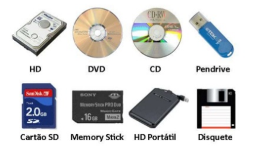

class:center, middle,vi,logo1 # zip-drive --- class: vi1 <div class="head">Integrantes</div> * Danilo * Bruno * Gabriela * Caio --- class:vi1 <div class="head">Foco</div> * INTRODUÇÃO * A HISTÓRIA DO ZIP-DRIVE * INSTALAÇÃO DE UM ZIP-DRIVE * COMO TORNAR O ACESSO AO ZIP-DRIVE MAIS RÁPIDO? --- class:vi1 <div class="head">INTRODUÇÃO</div> Dispositivos de armazenamento?  --- class:vi1 <div class="head">INTRODUÇÃO</div> O que é o zip-drive? <img src="/img/zipdriveSlide1.jpg" alt="Markdown Monster icon" style="float: left; margin-right: 10px;" width="400px" height="380px"/> --- class:vi1 <div class="head">A HISTÓRIA DO ZIP-DRIVE</div> Os primeiros computadores pessoais tinham algumas soluções de armazenamento permanente, como discos rígidos. As informações foram mantidas em fitas cassete ou disquetes para que os dados fossem facilmente transportados entre sistemas. <img src="/img/historiazip1.jpg" style="float: left; margin-right: 10px;" width="360px" height="320px"/> --- class:vi1 <div class="head">A HISTÓRIA DO ZIP-DRIVE</div> Lançamento Em 1994, a Iomega desenvolveu sua solução de armazenamento portátil de próxima geração, o zip-drive, projetado para orientar os usuários de computadores típicos, essas unidades eram menores e menos caras do que as unidades de Bernoulli e ainda assim conseguiram segurar 100 MB por disco, até 70 disquetes. Eles são fáceis de instalar e custavam R$200. Eles encheram uma necessidade em que nenhum outro produto da época podia e tornou-se muito popular entre os donos de computadores. Mais tarde, uma versão de 250 MB foi lançado em 1998 e uma versão de 750 MB em 2002. --- class:vi1 <div class="head">A HISTÓRIA DO ZIP-DRIVE</div> Click da morte <img class="timage" src="/img/black-skull-png-17.png" alt="Markdown Monster icon" style="float: left; margin-right: 10px;" width="400px" height="380px"/> --- class:vi1 <div class="head">A HISTÓRIA DO ZIP-DRIVE</div> Queda nas vendas <img src="/img/declinio1.jpg" alt="Markdown Monster icon" style="float: left; margin-right: 10px;" width="400px" height="380px"/> --- class:vi1 <div class="head">A HISTÓRIA DO ZIP-DRIVE</div> Legado O impacto da unidade zip sobre a indústria do computador pessoal é melhor resumido por dois ocorridos. Um nomeado um dos 50 melhores produtos de tecnologia de todos os tempos e o outro nomeado um dos 25 piores.Para sua época, foi um produto revolucionário que ofereceu uma tecnologia de armazenamento de nenhuma outra empresa poderia igualar. Alguns sentem manuseio da Iomega do clique da morte levou à morte do zip-drive, mas de armazenamento ótico barato teria feito o drive obsoleto de qualquer maneira. --- class:vi1 <div class="head">A HISTÓRIA DO ZIP-DRIVE</div> Modelos <img src="/img/historiazip2.PNG" alt="Markdown Monster icon" style="float: left; margin-right: 10px;" width="400px" height="380px"/> --- class:vi1 <div class="head">INSTALAÇÃO DE UM ZIP-DRIVE</div> Como instalar o zip-drive no computador? <iframe width="500" height="380" src="https://www.youtube.com/embed/XSRvVMZ3JGg"> </iframe> --- class:vi1 <div class="head">INSTALAÇÃO DE UM ZIP-DRIVE</div> Taxa de transferência <img src="/img/zip-transfer.PNG" alt="Markdown Monster icon" style="float: left; margin-right: 10px;" width="480px" height="380px"/> --- class:vi1 <div class="head">INSTALAÇÃO DE UM ZIP-DRIVE</div> Cuidados a se ter em conta na instalação <img class="timage" src="/img/warnings.png" alt="Markdown Monster icon" style="float: left; margin-right: 10px;" width="400px" height="380px"/> --- class:vi1 <div class="head">COMO TORNAR O ACESSO AO ZIP-DRIVE MAIS RÁPIDO?</div> <img class="timage" src="/img/iconfinder_fast-website-load-speed_4417092.png" alt="Markdown Monster icon" style="float: left; margin-right: 10px;" width="400px" height="380px"/> --- class:vi1 <div class="head"></div> <span class="fm">FIM</span>